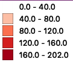
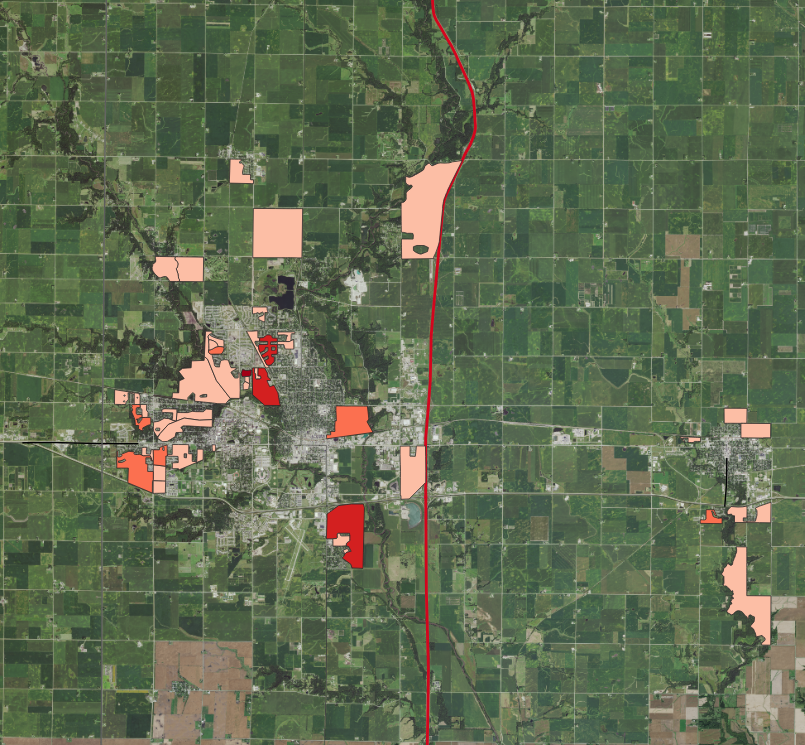

by Anna Thompson, 2/12/2019
This map show how many people below the age of 18 live in each census block in Ames. Bins are divided by equal intervals of 40.0. Census blocks with fewer than 40 people under the age of 18 are not displayed.
Legend:

